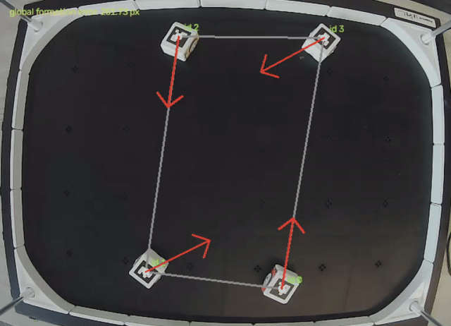
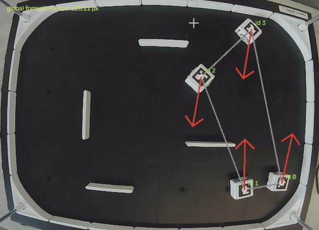
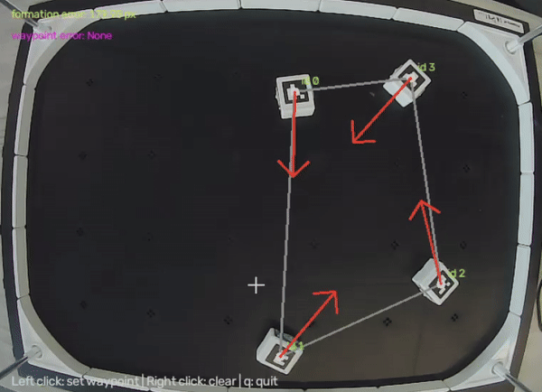

Multi-Robot Rendezvous and Flocking Tutorials
Robotics Tutorials · Multi-Robot Coordination
These tutorials demonstrate core multi-robot coordination behaviors with mobile robots, including rendezvous, fixed-slot formations, obstacle handling, and flocking with behavior switching. The examples connect camera-based localization to coordination and robot motion.
From tracking to coordination
Overhead visual tracking estimates robot positions and headings. A coordination controller then determines target positions or relative motions, and the robots receive movement commands. The demonstrations below highlight different tasks built around this common workflow.
Rendezvous and formation
The rendezvous demonstration shows robots coordinating their movement relative to one another. A related fixed-slot example assigns robots designated positions in a formation.
Rendezvous

Fixed slots

Flocking and obstacle handling
The remaining examples demonstrate obstacle-related motion and a flocking behavior with switching. They illustrate how coordinated movement can be adapted to different operating conditions.
Obstacle demonstration

Flocking with switching
